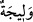

“
” sırdaş demektir. Sırdaş, kişinin içinde gizlediği gizli sırlara âşina kıldığı
kimse demektir.
Ebû Ubeyde’nin ifadesine göre bir şey kendi cinsinden olmayan bir şeyin içine
sokulduğunda o şeye “velîce” denir. Tek, çift ve çoğul için bir lafız kullanılır.
“Allah, yaptıklarınızdan” bütün davranışlarınızdan “haberdardır.” Hiçbir şey O’na
gizli kalmaz. Onun için cihad etmekten maksadınızın ne olduğunu, onda ihlâs var mı
yoksa ganîmet elde etmek ve medhedilmek gibi sebeplerle mi yapıldığını bilir.
Sa’dî der ki:
Mangırın üzerine altın suyu sürme canım
Çünkü bilgili sarraf onu bir mangıra bile almaz
Altınla kaplanmış olanı ateşe verirler
Bakır mı altın mı olduğu ortaya çıksın diye
Ayette cihada teşvik vardır. Rasûlullah (s.a.) şöyle buyurmuştur: “Sevabını Allah’tan
umarak Allah yolunda Ramazan ayı dışında bir günlük nöbet, yüz yıl gündüzleri
oruçlu olarak ve geceleri namaz kılarak geçirilen ibadetten hem daha üstün hem de
ecri boldur. Yine sevabını Allah’tan umarak Ramazan ayında müslümanların ırz ve
namusunu beklemek, Allah katında ecir ve şeref bakımından geceleri kaim gündüzleri
saim olmak şartı ile iki bin yıllık ibadetten daha üstündür. Şayet bu kişiyi Allah sağ
sâlim âilesine kavuşturursa bin yıl hakkında günah yazılmaz. Bol bol hasenat
(iyilikler) yazılır. Kıyamete kadar da bu nöbet (ribat) sevabı devam eder.”[100]
Yine bir hadiste buyurulmuştur ki:
“Allah ve Rasûlüne iman edip namazı dosdoğru kılan ve Ramazan orucunu tutan
kimseyi cennete koymak Allah Teâlâ üzerinde bir haktır. Bu kişi Allah yolunda ister
cihad etsin isterse de doğup büyüdüğü memleketinde otursun farketmez.”
Ashâb:
“Bunu insanlara müjdeleyelim mi?” dediler.
Efendimiz (s.a.) şöyle buyurdu:
“Cennette yüz derece vardır. Allah onları kendi uğrunda cihad edenlere
hazırlamıştır. İki derecenin arası gök ile yer arası kadardır. Allah’tan isteyince
Firdevs cennetini isteyiniz. Çünkü Firdevs, cennetin tam orta yerinde ve en
yukarısındadır. Onun üstünde Rahman’ın arşı vardır. Cennet nehirleri işte oradan
fışkırır.”[101]
Diğer bir hadiste ise şöyle buyurulmuştur: “Mücâhid Allah için nefsine karşı cihad
eden kimsedir.”[102] “Düşmanlarınızla çarpıştığınız gibi nefsânî arzularınıza karşı cihad
ediniz. İnsanların en bahadırı hevasını en çok yenendir.”
Nice akıllı geçinen vardır ki, hevasını emir yapıp onun esiri olmuştur. Şehvetlerin
kölesi olan, gerçek köleden daha zelil bir mertebededir. Paslı ayna, yüzünün
kırışıklıklarını göstermediği gibi hevasına tâbi olan nefsin de ayıplarını sana göstermez.